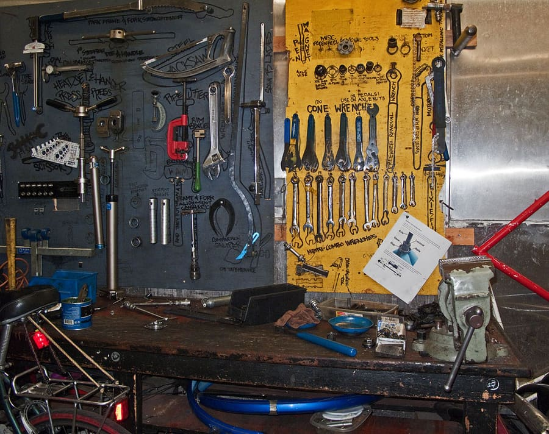

De werkplaats

Fietsherstelling Van Acker is een familiebedrijf, gestart in 1962 door Gustaaf Van Acker. Vandaag runt zijn kleindochter Elise de zaak, samen met twee vaste monteurs die elk hun eigen specialiteit hebben.
We werken met onderdelen van gerenommeerde merken en herstellen zoveel mogelijk in plaats van te vervangen — goed voor uw portemonnee en voor het milieu.
- Shimano- en SRAM-onderdelen
- Hoogwaardige binnen- en buitenbanden
- Milieuvriendelijke kettingolie
- Eigen wielenbouw op maat
Contacteer ons
Loop binnen tijdens de openingsuren of stuur ons een bericht via het contactformulier. We antwoorden meestal binnen de dag.
Kwaliteit die je voelt
Geen haastwerk: elke fiets die de werkplaats verlaat, is klaar voor jaren intensief gebruik.